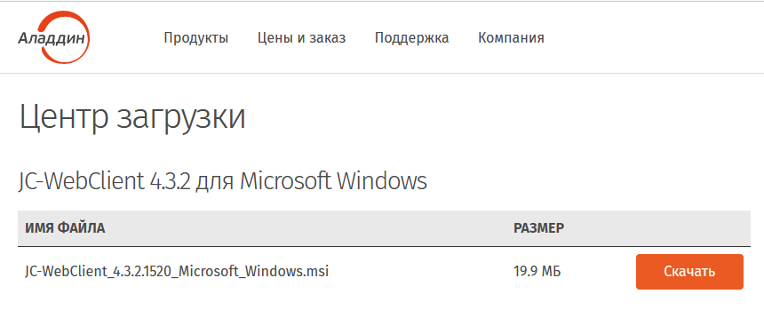

Пройдите по ссылке
Нажмите Скачать КриптоПро CSP

Введите Фамилию Имя Отчество, email адрес
Поставьте галочку для согласия с обработкой персональных данных и лицензионным соглашением
Нажмите кнопку СКАЧАТЬ для Windows
Дождитесь окончания загрузки
Запустите исполняемый файл и ответьте на вопросы инсталлятора
Пройдите по ссылке
Нажмите Скачать КриптоПро ЭЦП Browser plug-in
Дождитесь окончания загрузки
Запустите исполняемый файл и ответьте на вопросы инсталлятора
Проверьте что расширение для браузера установлено и активировано
В браузере Google Chrome
В правом углу браузера нажмите на кнопку Расширения
Убедитесь что расширение активно и работает
Если расширения нет - установите его по ссылке
В Яндекс Браузере
В правом углу браузера нажмите на кнопку КриптоПро Browser plug-in
Убедитесь что расширение активно и работает
Если расширения нет - установите его по ссылке
В браузере Microsoft Edge
В правом углу браузера нажмите на кнопку КриптоПро Browser plug-in
Убедитесь что расширение активно и работает
Если расширения нет - установите его по ссылке
В браузере Mozilla Firefox
В меню браузера зайдите в Дополнения и темы
Нажмите Расширения
Убедитесь что расширение активно и работает
Если расширения нет - установите его по ссылке
Нажмите кнопку Добавить
Пройдите по ссылке
Выберите версию для своего компьютера 32-битную или 64-битную (у большинства пользователей 64-битная
версия)
Загрузите программное обеспечение ПК Единый клиент JaCarta с сайта АО Аладдин-РД
Нажмите кнопку Скачать и дождитесь окончания загрузки
Запустите исполняемый файл и ответьте на вопросы инсталлятора
Пройдите по ссылке
Нажмите на ссылку Jc-WebClient для Microsoft Windows

Нажмите кнопку Скачать и дождитесь окончания загрузки
Запустите исполняемый файл и ответьте на вопросы инсталлятора